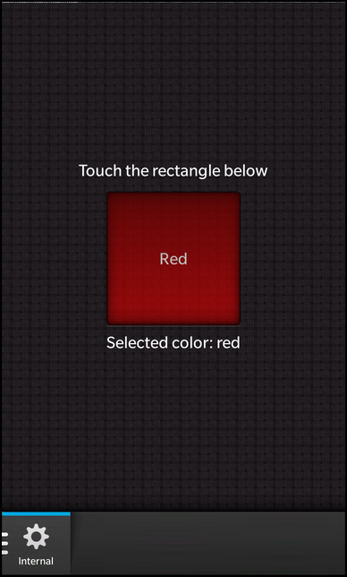

Files:
The Loader example demonstrates how to use QDeclarativeComponent to extend Cascades with a powerful mechanism to load/unload controls from the UI at runtime.

In this example we'll learn how to use the QDeclarativeComponent class to extend Cascades with a custom element named Loader that allows the user to load and unload Controls from an external QML file or from an internal component at runtime.
The UI of this sample application consists of a TabbedPane with two Pages. On the first page the user can switch between a set of colored rectangles by moving a Slider. The colored rectangles are implemented in external QML files and are loaded/unloaded on-the-fly by a Loader element depending on the value of the Slider.
Container { id: pageContainer property variant pageNames: ['', 'Page1.qml', 'Page2.qml', 'Page3.qml', 'Page4.qml', 'Page5.qml'] horizontalAlignment: HorizontalAlignment.Center verticalAlignment: VerticalAlignment.Center Loader { horizontalAlignment: HorizontalAlignment.Center // Update the source of the loader depending on the position of the slider source: pageContainer.pageNames[Math.round(slider.immediateValue)] } Slider { id: slider topMargin: 50 fromValue: 0 toValue: 5 value: 0 } }
The second page defines a couple of colored rectangles inside Components. These rectangles won't be visible on screen until the Loader loads them explicitly.
attachedObjects: [ QtBase.Component { id: redSquare ColoredRectangle { property string colorName: qsTr ("red") color: Color.Red title: qsTr ("Red") } }, QtBase.Component { id: greenSquare ColoredRectangle { property string colorName: qsTr ("green") color: Color.Green title: qsTr ("Green") } },
The user can change the component that should be loaded by the Loader by clicking on the visible rectangle.
Loader { id: rectLoader property int counter: 0 horizontalAlignment: HorizontalAlignment.Center topMargin: 10 // Bind one of the internal components to 'sourceComponent' property depeding on the counter sourceComponent: counter == 0 ? redSquare : counter == 1 ? greenSquare : counter == 2 ? blueSquare : yellowSquare // The Loader provides all the functionality of a standard Control e.g. the touch signal onTouch: { if (event.isDown()) { // Increment counter and wrap if > 3 counter = ((counter + 1) % 4) } } }
The Loader class is a custom Cascades control that embeds a QDeclarativeComponent. The component can either be an external QML file or a QtQuick.Component declared inside the QML file where the Loader is used. The embedded component can be loaded/unloaded at runtime and allows therefor to unitize the UI in smaller parts.
class Loader : public bb::cascades::CustomControl { Q_OBJECT Q_ENUMS(Status) // The URL to an external QML file that is used as embedded component Q_PROPERTY(QUrl source READ source WRITE setSource NOTIFY sourceChanged) // An internal component that is used as embedded component Q_PROPERTY(QDeclarativeComponent *sourceComponent READ sourceComponent WRITE setSourceComponent RESET resetSourceComponent NOTIFY sourceChanged) // The Cascades control that represents the embedded component Q_PROPERTY(bb::cascades::Control* control READ control NOTIFY controlChanged) // The current status of the loader Q_PROPERTY(Status status READ status NOTIFY statusChanged) // The loading progress of the embedded component Q_PROPERTY(qreal progress READ progress NOTIFY progressChanged) public: /** * Describes the status of the Loader */ enum Status { Null, ///< No embedded component is loaded Ready, ///< The embedded component has been loaded successfully Loading, ///< The embedded component is still loading Error ///< The embedded component could not be loaded }; Loader(bb::cascades::Container *parent = 0); ~Loader(); // The accessor methods for the properties QUrl source() const; void setSource(const QUrl &url); QDeclarativeComponent *sourceComponent() const; void setSourceComponent(QDeclarativeComponent *component); void resetSourceComponent(); Status status() const; qreal progress() const; bb::cascades::Control *control() const; Q_SIGNALS: // The change notification signals for the properties void controlChanged(); void sourceChanged(); void statusChanged(); void progressChanged(); // This signal is emitted when the embedded component has been loaded void loaded(); private Q_SLOTS: // This slot is invoked when the declarative component has been loaded void sourceLoaded(); private: // A helper method to clean up a previously loaded component void clear(); // A helper method that does the actual loading of the embedded component void load(); // The URL to an external QML file that is used as embedded component QUrl m_source; // The Cascades control that represents the embedded component bb::cascades::Control *m_control; // The actual declarative component that has been loaded QDeclarativeComponent *m_component; // A flag that defines whether this class owns the declarative component bool m_ownsComponent; };
The Loader inhertits from bb::cascades::CustomControl, so it behaves like any other Cascades control and provides the same basic properties. Inside the constructor of Loader we set its 'visible' property to false, because the Loader should be hidden as long as it hasn't loaded any component.
Loader::Loader(bb::cascades::Container *parent) : CustomControl(parent) , m_control(0) , m_component(0) , m_ownsComponent(false) { /** * The Loader should only be visible if a embedded component has been loaded, * so hide it by default. */ setVisible(false); }
Whenever the 'source' property of the Loader is changed, the setSource() method is called.
void Loader::setSource(const QUrl &url) { if (m_source == url) return; // If a new external source has been defined, clear the previous loaded component clear(); m_source = url; if (m_source.isEmpty()) { /** * If the source is empty, the user only wants to unload the current component, * so we simply emit the change notifications and return. */ emit sourceChanged(); emit statusChanged(); emit progressChanged(); emit controlChanged(); return; } // Let the QDeclarativeComponent do the actual loading of the external QML file m_component = new QDeclarativeComponent(qmlEngine(this), m_source, this); m_ownsComponent = true; // Start the loading load(); }
Inside this method we clear any previously loaded component, update the internal property value and if the new source URL is not empty, we create a new QDeclarativeComponent object. This object takes the URL to the external QML file, which it will load and parse. Since we created this component object, we remember in a flag that we own that object. Afterwards we call the load() method that will handle the remaining, common loading steps.
If not an external QML file is set on the 'source' property, but an internal component set on the 'sourceComponent' property, the setSourceComponent() method is called.
void Loader::setSourceComponent(QDeclarativeComponent *component) { if (m_component == component) return; // If a new component has been defined, clear the previous loaded component clear(); // Use the passed component as our embedded component ... m_component = component; // ... however we do not own the component in this case m_ownsComponent = false; if (!m_component) { /** * If the component is @c null, the user only wants to unload the current component, * so we simply emit the change notifications and return. */ emit sourceChanged(); emit statusChanged(); emit progressChanged(); emit controlChanged(); return; } // Start the loading load(); }
Inside this method we clear any previously loaded component again, update the internal property value and if the new component is not a null object, we call the load() method.
void Loader::load() { // Sanity check if (!m_component) return; if (!m_component->isLoading()) { // The component has finished loading already sourceLoaded(); } else { // Setup the signal/slot connections to be informed about progress and state changes connect(m_component, SIGNAL(statusChanged(QDeclarativeComponent::Status)), this, SLOT(sourceLoaded())); connect(m_component, SIGNAL(progressChanged(qreal)), this, SIGNAL(progressChanged())); emit statusChanged(); emit progressChanged(); emit sourceChanged(); emit controlChanged(); } }
The load() method checks whether the component has finished loading already (and calls sourceLoaded() in that case) or sets up signal/slot connections to monitor the loading progress otherwise.
void Loader::sourceLoaded() { if (m_component) { // Sanity check /** * If an error occured during loading, just emit the change notification * signals, the 'status' property will reflect that error state. */ if (!m_component->errors().isEmpty()) { emit statusChanged(); emit progressChanged(); emit sourceChanged(); emit controlChanged(); return; } // Get the declarative context of the declarative component QDeclarativeContext *creationContext = m_component->creationContext(); // If it has not been set, use the declarative context of the Loader element as fallback if (!creationContext) creationContext = QDeclarativeEngine::contextForObject(this); // Create a new child context that will be used as declarative context for the Cascades object QDeclarativeContext *ctxt = new QDeclarativeContext(creationContext); ctxt->setContextObject(this); // Load the Cascades object QObject *object = m_component->create(ctxt); if (object) { m_control = qobject_cast<bb::cascades::Control*>(object); if (m_control) { // If the loaded Cascades object is a Control, we use it as root element for the Loader and make it visible setRoot(m_control); setVisible(true); } else { // Otherwise report an error qmlInfo(this) << tr("Loader does not support loading non-visual elements."); delete object; delete ctxt; } } else { // Cleanup if the loading failed delete object; delete ctxt; m_source = QUrl(); } emit sourceChanged(); emit statusChanged(); emit progressChanged(); emit controlChanged(); emit loaded(); } }
The sourceLoaded() method is called after the QDeclarativeComponent is fully configured, so in the next step the actual C++ object can be created from the QML description, which the QDeclarativeComponent represents. For that we first need a QDeclarativeContext object which we either get from the component or from the Loader object itself. On top of that QDeclarativeContext object we create a child QDeclarativeContext object. This one would allow us to publish new C++ objects to the QML environment which will only be visible inside the QML code of the loaded component.
The call to create() of QDeclarativeComponent creates the actual C++ object that represents the QML code inside the component. We check whether the returned object inherits from bb::cascades::Control, in that case we set it as root control of the Loader and make the Loader visible. Otherwise some error occurred and we clean up the context object and report an error message.
void Loader::clear() { // If we own the declarative component, we have to delete it if (m_ownsComponent) { m_component->deleteLater(); m_component = 0; m_ownsComponent = false; } m_source = QUrl(); /** * Remove and delete the Cascades control that represents the loaded component * and hide the Loader. */ if (m_control) { setRoot(0); setVisible(false); m_control->deleteLater(); m_control = 0; } }
The clear() method is called to unload any loaded component. If we created the QDeclarativeComponent object ourself, we have to delete it explicitly here. If a Control had been loaded, we remove it as root object, hide the Loader object and delete the Control object afterwards.